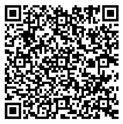
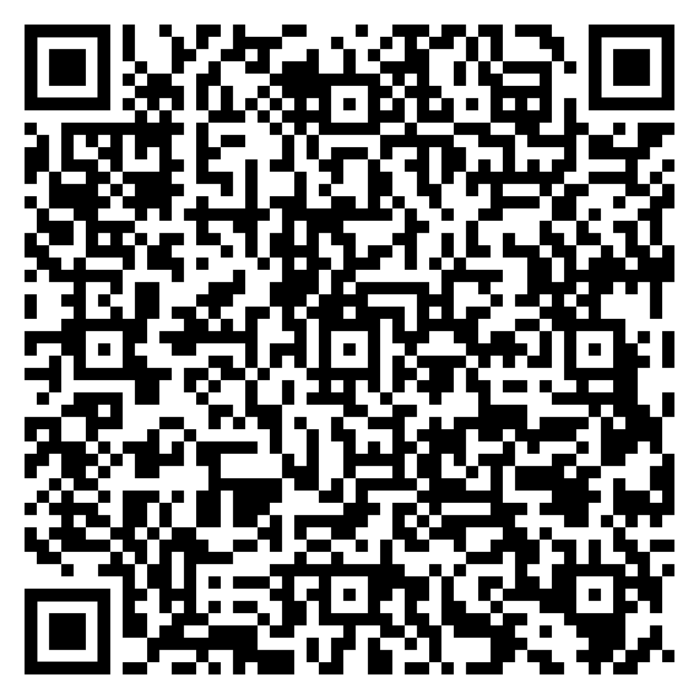

| Приложение № {{#if isPlus}}7{{else}}6{{/if}} к Руководству по коробочным продуктам «Антиклещ» и «Антиклещ+» |
|
Ключевой информационный документ об условиях договора добровольного страхования Полис добровольного страхования «Антиклещ{{#if isPlus}}+{{/if}}»
подготовлен на основании «Правил добровольного медицинского страхования граждан»
АО «СОГАЗ» в редакции от 31.01.2023г. (далее – Правила{{#if isPlus}} - 1{{/if}}) размещены по
адресу: https://www.sogaz.ru/upload/iblock/61f/gfzzmt3213aoon60h7fkwar3j48hzpfj/003_Pravila-dobrovolnogo-meditsinskogo-strakhovaniya-grazhdan-ot-31.01.2023.PDF |
 |
|
подготовлен на основании "Правил страхования от несчастных случаев и заболеваний»
АО «СОГАЗ» в редакции от 17.03.2023г. (далее – Правила - 2) размещены по адресу: https://www.sogaz.ru/upload/iblock/4af/pyq04h8ep04nj7enp211hzqhenptxgpt/177_Pravila-strakhovaniya-ot-neschastnykh-sluchaev-i-zabolevaniy-ot-17.03.2023.pdf |
 |
РАЗДЕЛ I. ЧТО ЗАСТРАХОВАНО?
РАЗДЕЛ II. ЧТО НЕ ЗАСТРАХОВАНО?
РАЗДЕЛ III. ТЕРРИТОРИЯ СТРАХОВАНИЯ
РАЗДЕЛ IV. КАК ПОЛУЧИТЬ СТРАХОВУЮ ВЫПЛАТУ?
| РАЗДЕЛ V. КАК ВЕРНУТЬ СТРАХОВУЮ ПРЕМИЮ? | |
| Основания для возврата страховой премии | Сумма возврата страховой премии |
|
1.Отказ от договора добровольного страхования в течение 14 календарных дней со дня его
заключения в соответствии с Указанием Банка России от 20 ноября 2015 года № 3854-У «О
минимальных (стандартных) требованиях к условиям и порядку осуществления отдельных видов
добровольного страхования» при отсутствии событий, имеющих признаки страхового случая. |
100% страховой премии – при отказе от договора добровольного страхования до даты начала
страхования; 100% страховой премии за вычетом части страховой премии, исчисляемой пропорционально сроку, в течение которого действовало страхование – при отказе от договора добровольного страхования после даты начала действия страхования |
| 2.Отказ от договора добровольного страхования в случае непредоставления, предоставления неполной или недостоверной информации о договоре добровольного страхования при отсутствии в течение срока действия страхования событий, имеющих признаки страхового случая | 100% страховой премии за вычетом части страховой премии, исчисляемой пропорционально времени, в течение которого действовало страхование |
| 3.Прекращение договора страхования, если после вступления Полиса в силу возможность наступления страхового случая отпала, и существование страхового риска прекратилось по обстоятельствам иным, чем страховой случай | |
| В иных случаях страховая премия возврату не подлежит. | |
|
Возврат страховой премии по п. 1 раздела V в течение 10 (десяти) рабочих дней со дня получения
Страховщиком письменного заявления Страхователя об отказе от договора страхования; Возврат страховой премии по п. 3 раздела V в течение 10 (десяти) рабочих дней со дня получения Страховщиком письменного заявления Страхователя об отказе от договора страхования с предоставлением документов, являющихся основанием для прекращения договора; Возврат страховой премии по п. 2 раздела V осуществляется в течение 7 (семи) рабочих дней со дня получения Страховщиком письменного заявления Страхователя об отказе от страхования. |
|
РАЗДЕЛ VI. КАК УРЕГУЛИРОВАТЬ СПОР ДО СУДА?